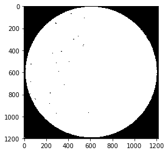
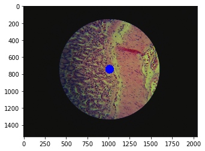
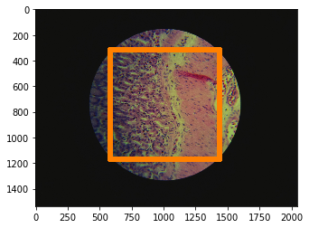
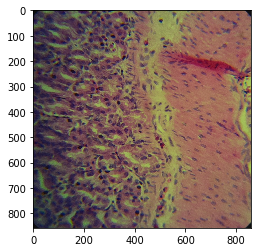
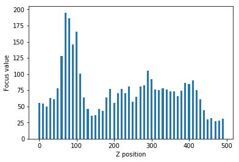

Looking at microscope slides with computer vision
We are making progress on the auto-scope project! The mechanical aspects of the microscope are all finished and working*. We’ve written most of the code to control the x, y, and z of the microscope and we’re starting to move onto the whole slide stitching and machine learning aspects of the project.
Check out this (oldish) video of the stage moving around. Look at it go!
Currently, the microscope has stage control (x, y), focus control (z) and a camera. We’re using an 8MP Raspberry Pi V2 camera to capture images of the slide. Two 28byj-48 stepper motors control the stage (one for x and one for y), and another stepper motor works the focus knob.
I’ve recently been working on the interactions between the camera and focus to capture tiles and enabling autofocusing. I thought I should detail some of the aspects of this part of the project while they are fresh in my mind.
Because we are using an open loop system the microscope doesn’t have a way to tell it's current location (only how far it's moved from the starting position). To ensure reproducibility we always initialise the microscope with the focus at maximum height, that way the microscope knows one of its limits, and we can work down from this position.
When taking photos through the microscope with a camera like the RPi V2, the wide lens results in a lot of black surrounding the actual image we want to capture. Ideally, for image stitching, we'd like a square picture with no boarded. We could manually crop this additional border. However, we have Python.
So, to automatically extract our square region of interest we first need to calculate a few parameters. To find the width of the circle, we mask the image with a back and white threshold and then move in from the sides until we hit something white. This gives us the diameter, easy.
To find the center of the circle we use a method from computer vision called blob centroid detection. In short, we take the average position of all the points in the circle.
Using the diameter and centre point we can apply a bit of trigonometry to determine the coordinates of a square that is inscribed in the circle.
We can then feed this square information to the camera, that will zoom in and return nicely cropped images. The above description is implemented in the calculate_zoom method of the autoscope Camera class.
Now that we have a tile we need a way to tell if it’s in focus. There are many 'blurriness metrics' for example the variation of the Laplacian. This method returns high values if an image contains high variance in rapid intensity change regions (associated with focused images).
To find the optimal focal height we need to map the focal plane and try to maximise the variation of the Laplacian (see bar plot). The initial scan of the focal plane is done in large steps down the focal plane until we find a peak. Once the course mapping is complete we then switch to fine steps to map the peak in detail. Now that we have a fine grain map of the focal plane peak we can simply move to focus with the highest variation. This course, fine, find algorithm is implemented in the auto_focus method of the autoscope Autoscope class.
You can check out all this camera code and more on GitHub or pip install opencv-contrib-python and try it yourself.
* My 3D printed gears suffer from a slight backlash that results in small errors when the stepper motors change direction. I think we should move to a timing belt system to prevent this in the future, however, slide scanning is still possible even with these errors.